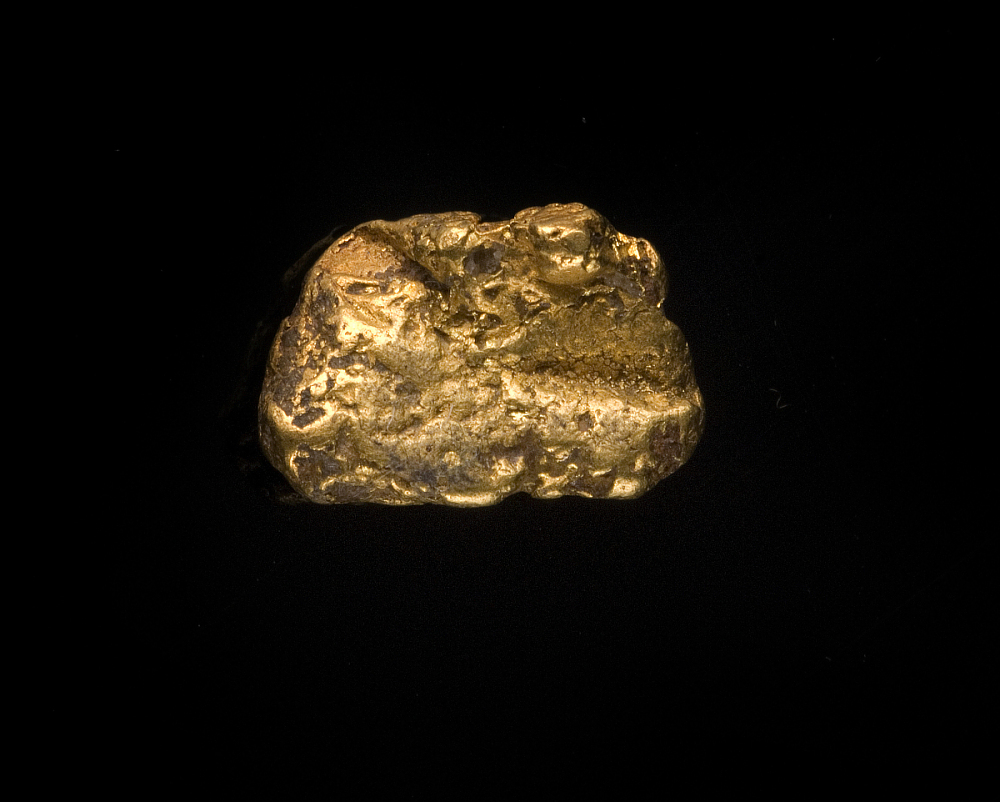
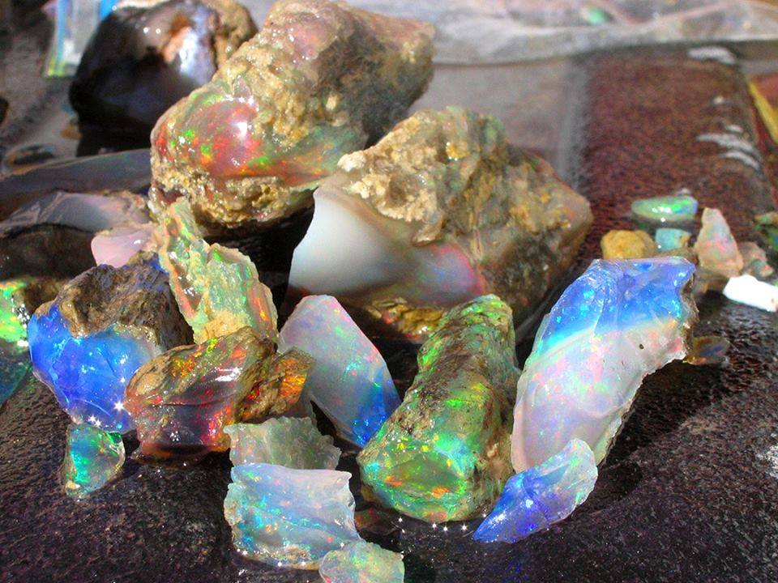
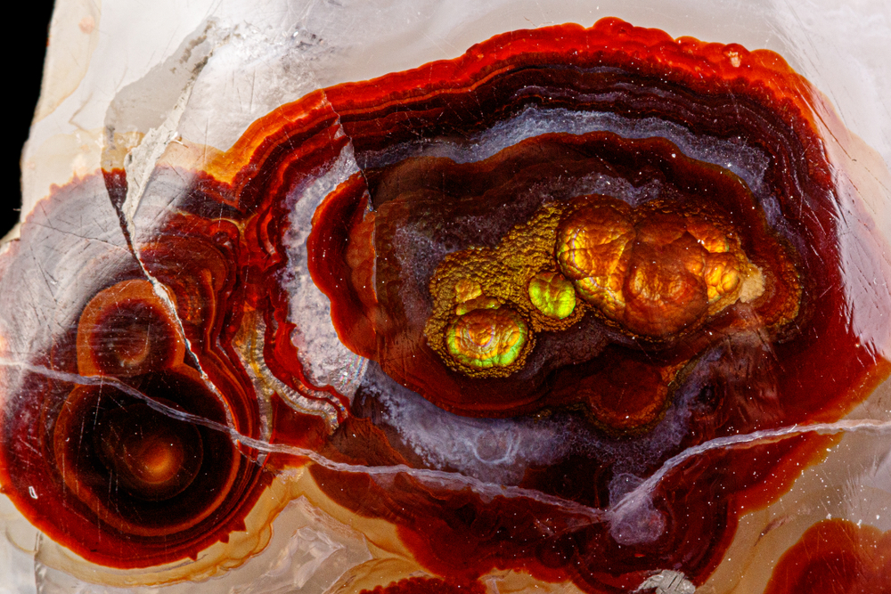

New here?

New to rockhounding and don't know where to start? Not to worry, we will show you the ropes. Click below to head over to our "Getting Started" guide
Getting StartedRocks & Minerals In Nevada


Nevada has some amazing rockhounding to offer. With its diverse geology and rich mineral deposits, the state is a treasure trove for enthusiasts seeking precious metals, gemstones, and unique mineral specimens. From the famous turquoise mines in the Royston District to the abundant gold and silver deposits in the Carlin Trend, Nevada's landscape provides countless opportunities for exploration and discovery.
Sponsored Dig Site

Own a digsite you would like to advertize in Nevada? Contact us for more information about being our sponsor of the month! Email sponsors@rockhounding.org for more information.
Dig With UsThis map was put together my Michael Rhea of rockhoundresource.com
Popular Rocks In Nevada
-
 Turquoise
TurquoiseNevada is known for its high-quality turquoise, with numerous mines producing gemstones in various shades of blue and green.
Read More -
 Variscite
VarisciteVariscite, a green phosphate mineral, can be found in several locations throughout Nevada, including the Little Green Monster Mine.
Read More -

Gold
Nevada is the leading gold-producing state in the U.S., with numerous mines and gold-bearing regions for enthusiasts to explore.
Read More -

Opal
Nevada is famous for its precious opals, particularly those found in the Virgin Valley and other locations throughout the state.
Read More -
 Garnet
GarnetGarnet deposits can be found in various locations throughout Nevada, including the famous Garnet Hill near Ely.
Read More -
 Quartz
QuartzQuartz, a versatile clear crystal, can be found in many locations throughout Nevada, particularly in the state's numerous mineral deposits.
Read More -

Fire Agate
Fire agate, with its iridescent colors caused by thin layers of iron oxide, can be found in a few locations in Nevada, such as the Candelaria Mountains.
Read More -
 Fluorite
FluoriteFluorite, a colorful mineral, can be found in various locations throughout Nevada, including the Jackpot Mine and the Goodsprings District.
Read More -
 Jasper
JasperNevada has several locations where high-quality red jasper can be found, such as the McDermitt area and the Pilot Mountains.
Read More -
 Rhodochrosite
RhodochrositeRhodochrosite, a beautiful pink manganese carbonate mineral, can be found in several locations in Nevada, including the Majuba Hill Mine.
Read More
Popular Areas In Nevada
-
 Valley of Fire State Park
Valley of Fire State ParkValley of Fire State Park, known for its stunning red sandstone formations, offers rockhounding opportunities for agate, jasper, and other minerals.
Read More -
 Royal Peacock Opal Mine
Royal Peacock Opal MineThe Royal Peacock Opal Mine in the Virgin Valley offers visitors the chance to dig for their own precious opals in a famous and productive location.
Read More -
 Garnet Hill
Garnet HillGarnet Hill, located near Ely, is a well-known site for finding high-quality almandine garnets in a natural setting with beautiful panoramic views.
Read More -
 Royston Turquoise Mines
Royston Turquoise MinesRoyston Turquoise Mines, located near Tonopah, offer visitors the chance to dig for the beautiful and highly sought-after turquoise gemstones.
Read More -
 Walker Lake
Walker LakeWalker Lake, located in Mineral County, offers opportunities to find various minerals such as quartz, calcite, and other interesting specimens.
Read More -
 Black Rock Desert
Black Rock DesertThe vast Black Rock Desert, known for its annual Burning Man event, offers rockhounds opportunities to find minerals such as obsidian, jasper, and petrified wood.
Read More
Geology of Nevada
The geology of Nevada is a fascinating and complex story that spans over a billion years. The oldest rocks in the state date back to the Precambrian era, which includes ancient metamorphic rocks such as gneiss and schist. These ancient rocks were formed under extreme pressure and heat deep within the Earth's crust.
During the Paleozoic era, Nevada was covered by a shallow sea, which deposited vast amounts of limestone and other sedimentary rocks. Fossil evidence of marine life, such as trilobites and brachiopods, can still be found in these rock layers today. As the sea retreated, sand dunes formed, leaving behind the impressive sandstone formations that can be seen in the Valley of Fire State Park.
Throughout the Mesozoic era, Nevada experienced intense volcanic activity, leading to the formation of extensive igneous rocks, such as granite and basalt. This era also saw the birth of the Sierra Nevada mountain range, which was uplifted due to the subduction of the Farallon Plate beneath the North American Plate.
The Basin and Range Province, which characterizes much of Nevada's current landscape, began to form during the Cenozoic era. This geological feature is marked by a series of parallel mountain ranges separated by vast desert basins. The stretching and thinning of the Earth's crust during this time led to the formation of numerous fault lines and the creation of striking geological landmarks, such as the Ruby Mountains and the Great Basin.
Today, Nevada is known for its diverse geology, which has contributed to its rich mineral deposits, including gold, silver, copper, and turquoise, making it a popular destination for rockhounds and geology enthusiasts alike.